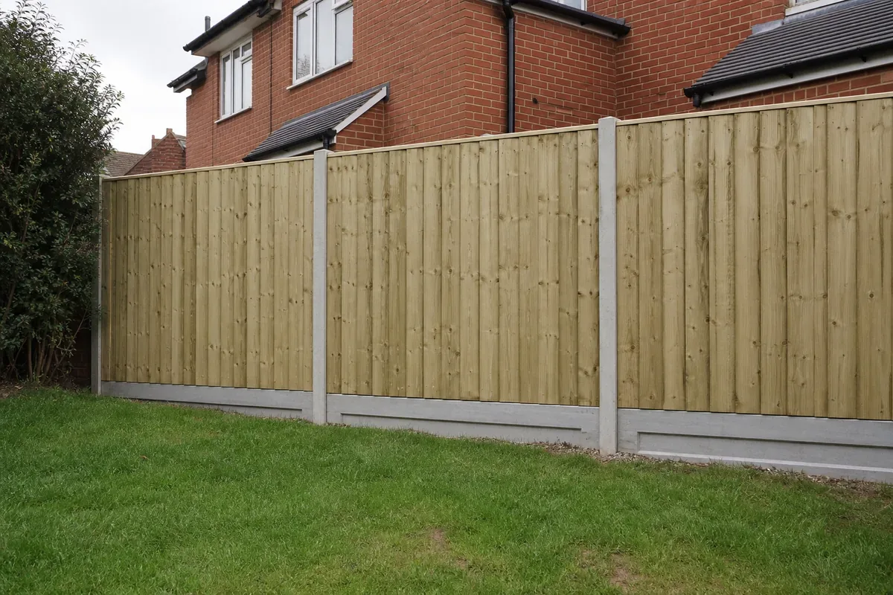

Timber and composite garden boundaries for rear gardens, side passages and shared property lines.
Closeboard, feather edge and panel systems for privacy and boundary marking on residential plots across Birmingham.
View service
Fencing installation and repair work across Birmingham and nearby suburbs. Garden fencing, closeboard, composite panels, wooden gates, and commercial perimeter fencing.
Use the form to send fence length, postcode and photos if available. We respond with an itemised written quote before any work is booked.
We work across Birmingham city and nearby suburbs including Edgbaston, Moseley, Harborne and Sutton Coldfield. Postcode and access are checked when preparing your quote.
Closeboard, feather edge, panel fencing and composite each suit different budgets and maintenance expectations. We outline trade-offs in plain language during the quote.
Quotes state what is included — supply, installation, removal of old fencing if agreed, and any ground preparation such as digging out soft or rotted posts in clay soil.
Call 0121 405 2079 or submit the quote form at any time. We respond during working hours; urgent repair enquiries are prioritised when described at contact.

Timber and composite garden boundaries for rear gardens, side passages and shared property lines.
Closeboard, feather edge and panel systems for privacy and boundary marking on residential plots across Birmingham.
View serviceReplacement of damaged panels, posts and gravel boards after weather wear or impact damage.
Single-panel swaps, post re-setting and gate adjustments where the remaining fence line is structurally sound.
View serviceNew fence runs set out from post centres, with concrete footings sized to panel height and soil conditions.
Full boundary installation including post setting, rails, panels, gravel boards and agreed waste removal.
View serviceComposite panel systems as an alternative to treated timber where lower ongoing maintenance is required.
Wood-plastic panels with matched posts — suited to homeowners who prefer not to stain timber annually.
View serviceVertical closeboard boards fixed to rails for a solid garden boundary with no gaps between boards.
Solid privacy screening for rear gardens — boards meet edge to edge on arris rails between concrete-set posts.
View serviceOverlapping feather edge boards or prefabricated panels suited to standard garden lengths.
Overlap boarding or standard panels for level runs — economical option for typical suburban bay lengths.
View serviceTimber garden and side gates hung to align with existing fence height and opening width.
Side passage and garden gates with hinges, latches and frames sized to your opening and fence profile.
View servicePerimeter fencing for yards, car parks, schools and business premises across the West Midlands.
Mesh, palisade and timber screen fencing for business yards, schools and light industrial perimeters.
View serviceSteel palisade and mesh systems where a higher-specification perimeter is required.
Palisade and welded mesh installed to manufacturer specification with concrete foundations and gated access.
View serviceInstallation and repair work across Birmingham city and West Midlands — each area page lists postcodes served.
Pressure-treated timber for rear garden privacy. Closeboard gives a solid face; feather edge overlaps boards for a traditional profile at lower cost than closeboard.
Closeboard · Feather edgeWood-plastic panels with matched posts — lower ongoing maintenance than stained timber. Suited to homeowners who prefer not to treat boards annually.
Composite fencingMesh, palisade and welded systems for yards, schools and sites where specification exceeds domestic garden fencing.
Commercial · SecurityPostcode, approximate fence length, material preference and photos for repair jobs — via the form or phone 24/7.
We respond with an itemised quote stating materials, scope, removal of old fencing if included, and estimated duration.
Installation or repair is booked after you accept the quote. Scope does not change without agreement.
Feedback from customers is published on our Google Business Profile. Read recent reviews there or leave your own after completed work.
View Google reviewsLine length, panel height, ground conditions on clay-heavy Mercia mudstone plots, access for materials through terraced side passages, and whether old fencing must be removed all affect cost. Closeboard and feather edge timber differ from composite systems in both material price and installation time. We itemise these in a written quote.
Complete the quote form on this site or call 0121 405 2079 with your postcode, approximate fence length and a brief description of the work. Photos of the existing boundary help when assessing repair work.
We cover Birmingham city (B postcodes) including Edgbaston (B15), Moseley (B13), Harborne (B17), Kings Heath (B14), Sutton Coldfield (B72–B74), Erdington (B23–B24), Solihull (B90–B91) and suburbs such as Hall Green, Yardley and Shirley. See our areas page for the full list with postcodes.
Yes, where posts remain sound we can replace individual panels, boards, gravel boards or gate hardware. If rot is widespread at ground level in damp clay soil, we explain whether partial repair or full replacement is more practical.
A typical rear garden run is often completed within one to three days depending on length, soil and whether existing fencing is removed. Timescales are confirmed in your quote.
Yes. Phone and online quote requests are available 24 hours a day. We respond during working hours; include your postcode and photos so we can assess repair enquiries efficiently.
Removal and disposal of existing panels and posts can be included in your quote when agreed in advance. Concrete bases may be dug out or left depending on the new post layout.
Rear garden fences are commonly up to 2 metres. Front boundaries may have lower limits depending on location. We note the height specified in your quote; planning compliance is the property owner's responsibility.
Yes. Timber side and garden gates are supplied and hung to match your fence height and opening width. See our wooden gates service page for specification detail.
Payment terms are stated on your written quote. We confirm the schedule before work begins.
Yes. Sloped plots in suburbs such as Moseley and Kings Heath are common. Panels are stepped or raked to follow ground level while keeping a consistent top line — we confirm the method in your quote.
Feedback from customers is published on our Google Business Profile. We link to Google from our reviews page rather than reproducing comments here.
Postcode, approximate fence length in metres, material preference if known, and photos of existing fencing for repair jobs. Note any access constraints such as narrow side paths on terraced streets.
Yes. Commercial mesh, palisade and timber perimeter fencing are quoted separately with site-specific specification. Describe the boundary length and security requirement when enquiring.
Describe your fencing project using the form or call 0121 405 2079.